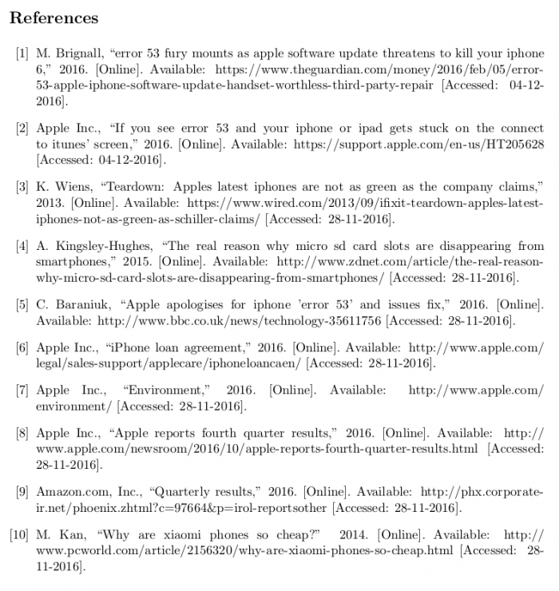
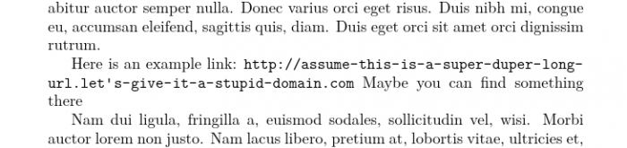
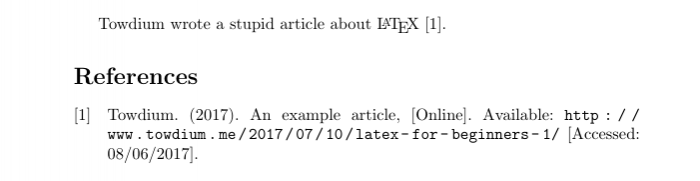

Latex 指南
从零开始 LaTeX 快速入门
LaTeX概览
摘自维基百科：LaTeX， 是一种基于TEX的排版系统， 由美国电脑学家莱斯利·兰伯特在20世纪80年代初期开发， 利用这种格式，即使用户没有排版和程序设计的知识也可 以充分发挥由TEX所提供的强大功能，能在几天，甚至几 小时内生成很多具有书籍质量的印刷品。对于生成复杂表 格和数学公式，这一点表现得尤为突出。因此它非常适用 于生成高印刷质量的科技和数学类文档。这个系统同样适 用于生成从简单的信件到完整书籍的所有其他种类的文档。
简单点说：LaTeX 基于 TeX，主要目的是为了方便排版。 在学术界的论文，尤其是数学、计算机等学科论文都是由 LaTeX 编写, 因为用它写数学公式非常漂亮。
在稍微了解一点 LaTeX 后，你会发现 LaTeX 的工作方式类似 web page，都是由源 文件（.tex or .html）经由引擎（TeX or browser）渲染产生最终效果（得到 PDF 文件 或者 生成页面）。 两者极其神似，包括语法规则与工作方式。所以呢，与 HTML 一样，入门其实很简单。
一般的规范写法中都是在 HTML 文件中写入 web page 的结构与内容，再由 css 控制页面生成的样式。当然你也可以选择在 HTML 中直接写入样式内容， 不过这并不提倡。同样，在 LaTeX 有着同样的情况，你可以在 tex 源文件中 同时写入内容和样式，也可以内容与样式分离，以网络上流传广泛的 清华大学 LaTeX 模板为例，以.cls(class)结尾的 thuthesis.cls 便可看作是与 css 起到同样作用的样式文件。
LaTeX 有所谓宏包的概念，\usepackage{foo} 即可使用宏包 foo 中定义的内容。 所谓宏包就是一些写好的内容打包出来以便大家使用而已。这跟 C 语言的 include 是一致的，将文件加载进来进行使用。利用宏包，我们可以使用很多现成的好用的样式。 当然了，如果要编写一个自己的个性化的宏包也是可以的，不过需要学习成本。
初期的话，我们可以选择一个 LaTeX 模板进行改造。不过第一次见到一些模板，可能会对其中很多文件的作用一头雾水. 下面是简单的介绍， 当然更多介绍的话可以自行搜索。
| LaTeX模板常见文件类型 | 功能简要介绍 |
|---|---|
| .dtx | Documented LaTeX sources，宏包重要部分 |
| .ins | installation，控制 TeX 从 .dtx 文件里释放宏包文件 |
| .cfg | config， 配置文件，可由上面两个文件生成 |
| .sty | style files，使用\usepackage{...}命令进行加载 |
| .cls | classes files，类文件，使用\documentclass{...}命令进行加载 |
| .aux | auxiliary， 辅助文件，不影响正常使用 |
| .bst | BibTeX style file，用来控制参考文献样式 |
class 与 style 似乎十分相像，它们在功能上的确很相似，但是也有区别。这里 是关于 .cls 与 .sty 文件的区别.
安装配置LaTeX
LaTeX 配置环境很简单，只需 2 步：
1.根据平台选择一个 TeX 发行版 进行安装，建议选择最全功能最多的版本
TeX 发行版的概念相当于 Linux 及其发行版，Linux 内核虽然只有一个，但是有很多基于内核的不同特色的 Linux 发行版，Ubuntu，Fedora 等等不胜枚举。
Windows 用户推荐 TeXlive，不推荐 CTeX。Mac用户推荐使用 MacTeX.
2.选择一个合适的 LaTeX 编辑器
在安装好LaTeX环境以后，通常都会有一个自带的编辑器，比如 CTex 的WinEdt， MacTeX的TeXShop， 不过功能并不强大，好比 Windows 记事本，只有一些基本的文本编辑功能。 在这里推荐一个还不错的LaTeX编辑器：TeXstudio。
开始第一个 LaTeX 文档
打开 TeXstudio，新建一个 TeX 文件，写入以下内容：
\documentclass{article}\begin{document}
Here comes \LaTeX!
\end{document}
点击 F5（默认快捷键）compile and view，即可看到效果。
至此，一个极简易的 LaTeX 文档已经完成。
LaTeX 进阶
重要语法
上一节了解完操作步骤后，我们稍微说说原理。你可以看到这一段文本有很多转义符（反斜杠）。在 LaTeX 中，这用来表示一个命令。配合编辑器的高亮，你可以轻松地分辨出各个部分。对于普通的指令，一般是这样的格式 \command[arg1]{arg2}{arg3} 前面的一部分是指令名，方括号中是可选参数，花括号中是必选参数。对于最基础的命令来说，至多有一个可选参数，任意个必选参数。当然，对于一些简单的命令，没有参数也是完全可以的。比如这里的 \LaTeX，就只是表示了一段特殊文本。在我们深入学习之后，完全是可以自定义命令的，就像各种编程语言中自定义函数一样。
另外一个非常重要的概念是这里的环境，也就是 \begin{document} 和 \end{document}。环境的范围由 \begin{env} 和 \end{env} 来确定。在这一范围中的文本会有特殊的效果。这里的环境 document 表示着文本的内容范围，在此之外是不允许出现文章内容的，你可以用那些位置来定义各种格式，或者配置各种宏包。除此之外，还有巨量的环境可以使用，比如文本对齐的 align， 插入公式的 equation，插入源代码的 lstlisting。他们可能会重新定义环境内文本的显示方式，充满着玄学，但是很好用。
内容解释
这里的 \documentclass{article} 是每个 LaTeX 文本必备的部分。这里相当于你告诉编译器这个文本是一个文档，那么编译器就会用文档的格式来编译。除此之外，常用的还有 \documentclass{book} 这就意味着这是一本书籍的排版。在这种情况下，编译器可能会考虑更大的标题，更多分页。具体效果取决于 LaTeX 内嵌的排版格式。当然格式都是可以魔改的，不过这就略玄学了，我们先不说。document 环境里我们就打了一行字，正如你在 pdf 文件中看到的那样。
你的第二个 LaTeX 文档
大概知道他的原理之后，我们不如激进一点，下面是整个文档的源码，你可以着手准备编译了。
\documentclass[11pt]{ctexart}
%导入宏包
\usepackage{esint,bm} %提供环路重积分符号和数学粗体
\usepackage{indentfirst} %修改首行缩进的行为
\usepackage{fullpage} %两边边距填充
\usepackage{graphicx} %插图
\usepackage{listings} %插代码
%配置宏包
\renewcommand{\lstlistingname}{代码} %重定义代码命名
%文档信息
\title{一篇 \LaTeX{} 入门介绍}
\author{Towdium}
\begin{document}
% 绘制标题
\maketitle
% 正文内容
\section{数学公式}
这是一段示例公式，最简单的方式是使用两个美元符号，像这样：
$$\oiint \bm{E}\cdot d\bm{s}=\frac{Q}{\epsilon_0}$$
对于内文公式，还可以这样写：$E=mc^2$。
当然，你也可以用更复杂的方法，如公式\ref{eq}。
好处在于这种用法可以对公式添加序号，以便进行内文引用。
\begin{equation}
\mathcal{L}_t{f}=\int^\infty _0 e^{-st}f(t)dt
\label{eq}
\end{equation}
\section{图片插入}
通过 \verb+graphicx+ 这个包，我们可以非常轻松的插入图片。
图\ref{fig}是一张示例图片，同样使用了内文引用。当然插图的方法还有很多，
来实现不同的效果，我们这里只讲基础。这里的图片是浮动的，在没有位置的时候，
他可能会浮动到其他页面上，这样可以防止文档里出现大量的空白。
\begin{figure}[!ht]
\centering
\includegraphics[width=0.4\textwidth]{pic}
\caption{一个示例图片}
\label{fig}
\end{figure}
\section{代码插入}
这里提供了一个最小化的代码插入方式。效果给出在代码\ref{code}中。
包 \verb+listings+ 提供了无比强大的代码高亮支持，
只不过我这里没有进行相关的设置，所以内容均是黑白的。
有机会的话我会在后文中提供一些思路。
\begin{lstlisting}[language=python, frame=single,
caption=一段示例代码, label=code, captionpos=b,
basicstyle=\footnotesize]
usage = "Run the script: ./geolocate.py IPAddress"
if len(sys.argv)!=2:
print(usage)
sys.exit(0)
\end{lstlisting}
\section{表格插入}
老实说表格在 \LaTeX{} 中的使用比较反人类，尤其当你想要合并单元格的时候。
不过这也是没有办法，任何一个富文本语言对表格这种东西基本上都相性不合。
表格\ref{tab}提供了一个较为简陋的表格实现。
\begin{table}[!h]
\centering
\begin{tabular}{ c | c | c }
\hline
cell1 & cell2 & cell3 \\ \hline
cell4 & cell5 & cell6 \\ \hline
cell7 & cell8 & cell9 \\ \hline
\end{tabular}
\caption{一个示例表格}
\label{tab}
\end{table}
\section{枚举}
枚举什么的其实也很简单，大概像这样：
\begin{enumerate}
\itemsep-0.5em %缩小间距
\item 第一条
\item 第二条
\end{enumerate}
在枚举环境中，他也会完全帮你搞定编号排序的问题。
当然，你也可以使用没有编号的版本：
\begin{itemize}
\itemsep-0.5em %缩小间距
\item 第一条
\item 第二条
\end{itemize}
\end{document}
排错
当然这个文档在你的电脑上很可能不能成功编译。有下边几个原因：
你没有使用 XeLaTeX 引擎：看前一章我们说的引擎配置。
你没有图片 pic.pdf：我已经上传到了 Github 仓库 ，下载并放置到源文件的同一文件夹，并命名为 pic.pdf 即可。当然你如果想用自己的图片也没有问题，\includegraphics[width=0.4\textwidth]{pic}中的 pic 就是插入图片的路径。我个人建议 pdf 图片，他长期以来发挥稳定，其它格式有时则会翻车。你可能还要尝试带后缀名和不带后缀名的写法。 对于新手而言，阅读 LaTeX 的错误日志是相当痛苦的事情。我刚开始学的时候，基本上每次编译都是几十个警告，只能硬着头皮写，当你逐渐熟悉之后，你才能明白这些警告在说什么。当然最好的方法是找一些模板或者非常短的文章来编译，从一开始就不要允许大规模警告的出现。
如果你能成功编译的话，我觉得我也没必要说太多了，各个排版结构的效果和源码你都能看到，重要的命令我也给出了注释。而某一些命令的作用，你完全可以删除特定代码来观察结果的变化。
关于内文应用，他的逻辑是在某一个部件的内部定义 \label{foo}, 然后在文档的任何地方引用只需要 \ref{foo} 即可。因为 LaTeX 会编译多次，所以即使先引用后定义也是完全没有问题的。
关于中文的显示，后文会有一章节作为专题来讲
关于段落和分词，LaTeX 以两个换行作为段落分割，一个换行没有任何作用，只是方便代码排版。如果要强制换行，可以使用 \\。类似地，LaTeX 也会自行处理单词间的间距。无论使用多少个空格，LaTeX 只会把它当作单词分割，输出的结果都是一样的。
如果你之前习惯使用 markdown 的话，可能会难以接受 LaTeX 代码的复杂度。本质上来说，markdown 代码只含有文本内容，而没有特定格式，但是 LaTeX 是完全不同的，他的强大之处在于你可以自定义任何的一个格式，对于一些常用的代码块，你完全可以自定义成函数，这样就可以大大减小冗余文本的数量。现在你大概可以知道，LaTeX 和 markdown 完全不是一个数量级的产品。
当然每个命令可以配置的选项都是异常复杂，我这里只是给出最简便的方法。如果想要最完整的介绍，你可以找到各个宏包的官方文档，基本上都是几十页起步。对于中文文本格式和插入图片的细节，我在 这篇文章 里做过一些介绍。当然 LaTeX 可以挖掘的内容几乎是无限的，我所介绍的内容仅仅是我日常用到的范畴。如果对任何一个细节有更高的要求，你都可以在搜索引擎上找到更具体的介绍，我这里只提供方法，不提供细节。
Latex 的关于中文常见问题
Latex 一般用 CJK 和 CTEX 宏包支持中文编辑，CJK 和 CTEX 的默认编码是 GBK，而 windows 下的默然编码就是 GBK，因此 CJK 和 CTEX 不需要特殊配置就可以直接支持中文 Latex 编译，只需要用 GBK 编码保存文件即可。但是如果把文件的字符编码换成现在更加普遍的 utf-8 的话，应该怎么操作呢？在这里有3种方式可以使用。
\CJKutf8
CJK有两个基本宏包：CJK和CJKutf8，其中后者面向utf-8编码，其一般使用方法如下：
\usepackage{CJKutf8}
\begin{document}
\begin{CJK}{UTF8}{}
…
\end{CJK}
\end{document}
用pdflatex编译tex文件，即可得到输出结果。
CTEX的UTF8选项
上面的 CJKutf8 只提供了两种字体，可选择的余地太小，我们可以直接用 UTF8 选项使CTEX 支持 utf-8 编码，利用 CTEX 丰富的字体和中文设置可以更好地编辑 Latex 中文文本，其语法格式为：
\documentclass[UTF8]{article}
\usepackage{CTEX}
或者，直接使用ctexart
\documentclass[UTF8]{ctexart}
xelatex编译
XeTeX 是一种使用 Unicode 的 TeX 排版引擎，它原生的支持 Unicode ，并默认其输入文件为 utf-8 编码。XeTeX 可以在不进行额外配置的情况下直接使用操作系统中安装的字体。XeLaTeX 是使用 LaTeX 的排版引擎，也有上述 XeTeX 的优点，命令下直接使用 xelatex ***.tex 就会产生对应的 PDF 文件。以下是一个简单的xelatex 编译 ctex 的例子（同样把 tex 文件保存成 utf-8 格式）：
% xelatex_test.tex
\documentclass{article}
\usepackage{CTEX}
\begin{document}
这是一个CTEX的utf-8编码例子，{\kaishu 这里是楷体显示}，{\songti 这里是宋体显示}，{\heiti 这里是黑体显示}，{\fangsong 这里是仿宋显示}。
\end{document}
明眼的同学一下就发现了，这货跟上面第2条中 ctex 的代码相比，就少了一个 UTF8 选项啊！额，表面看是这样的，但是如果如果直接把 xelatex_test.tex 用 pdflatex 编译，系统就会报错。这是因为不加 UTF8 选项，pdflatex 默然按照 GBK 编码处理 tex 文件，而这个文件我们是用 utf-8 编码的，这样就会造成解码失败。这里直接用 xelatex 编译，就会编译成功，因为 xelatex 的默认输入文件是 utf-8 编码。切换到 tex 文件所在目录，直接用 xelatex 编译 tex 文件：xelatex xelatex_test.tex，即可。
关于 Latex 的引用常见问题与解答
前言
之前我们说了一些基础语法以及一些进阶的使用方法。这次我们说一些基础的引用语法。以及常见的问题
何为引用
说真的如果你还不清楚引用是啥，你可能不需要看这一章。不过你既然来了，我们就稍微说一说。粗略地说，当你在论文里引用了其他人说的话，你不能像写博客这么随意，直接丢个超链接，取而代之的是，你需要在论文结尾提供这个来源的详细信息，诸如作者，年份，文章标题，或者是期刊刊号，图书页码。你需要在文章末尾的参考文献目录中列举这些信息，以及在对应地在文本里添加注释。下图我给出了我某一篇论文的参考文献目录，当然内容不重要（不仅不正式，甚至还有错别字），大概就长这样。当然是用 LaTeX 直接生成的。
说到这里不禁要对比一下 word，你在 word 里很难把参考文献排的这么规整，特别是你有一些很鬼畜的超链接时。这个例子我们使用了 IEEE 格式，如你所见，一个典型的 IEEE 引用格式是： [序号] 名首字母.姓全拼, “文章名,” 年份. 其他信息. 参考文献还有各种不同的格式，这里给出的 IEEE 是理工科常用的，而人文学科多会使用 APA 或者 Harvard 格式。这些格式基本大同小异，按照作业要求选取就可以了。不同引用格式的区别你可以在 这里 找到。当然引用的具体格式你根本不用知道的那么清楚，LaTeX 会帮我们直接生成。不管你用什么格式，我们只需要给 LaTeX 提供必要的字段，他就可以帮我们生成需要的格式。 除去参考文献列表，文本内的引用格式也是各不相同的，你要做的同样是告诉 LaTeX 你需要的格式，他会搞定一切。
操作方法
bib 文件
LaTeX 使用 BibTeX 文件来管理引用列表。要添加引用，最简单的方法是在 tex 文件的同一目录下新建一个文件，名为 reference.bib,内容大概像这样：
@misc{example,
author = {Towdium},
title = {An Example Article},
year = 2017
}
正文引用
当你完成这一个条目之后，你要做的就是在正文里引用这个条目。正文内容可以是这样的：
\documentclass{article}
\begin{document}
Towdium wrote a stupid article about \LaTeX{} \cite{example}.
\bibliographystyle{IEEEtran} % set style to IEEE
\bibliography{reference.bib} % set reference file name
\end{document}
将这两个文件放在同一文件夹进行编译，你得到的结果大概是这样：
值得注意的是正文中的 \cite{} 命令就是用来引用文献的，这里的参数就是我们之前提到的标识符。下边的 \bibliography{} 命令提供了源文件的文件名。执行引用时，他会到这个文件里寻找相关的条目，然后添加进来。 这里的 IEEEtran 是 LaTeX 自带的 IEEE 引用格式，不过如果你安装的是精简版的 TexLive 的话，也许会没有这个格式。在 archlinux 下边，你需要安装 texlive-publishers 这个包，其他系统还请自行解决。
操作细节
引用类型
BibTeX 提供了相当多的模板来帮助你填充引用信息。最简陋的有 misc （杂项），你可以用它来做网页的引用。除此之外，它还提供诸如学术文章，书籍，会议记录，手册等各种引用模板。不同的模板有会用到不同的字段，这些信息在 Wiki 的 BibTeX 页面 上都有比较详细的解释。最简单的是杂项，没有必选字段，你给什么信息他就填充什么信息；而正式一点的 Article 之流，则必须提供作者，标题，期刊名，年份，可选的字段有：期数，文章编号，页码和额外注释。你可以在各种模板中选取你需要的来使用。文档编译后，各种模板的信息都会被转化对应的引用格式。 这里拿 google scholar 作为例子。点击条目下的“引用”就会弹出图示界面；点击 bibtex，就可以直接导出成 bibtex。其他数据库，其他文献管理程序同样适用。大数据库导出的文件一般比较可靠，但是也有一些需要手动微调。
自动生成 bib 文件
严格来说这并不是 LaTeX 的技巧，只能算是写论文时候偷懒的办法。你完全没必要手动写 bib 文件，取而代之的是，大部分数据库都会提供引用导出的功能。
URL
严谨地说 URL 跟引用并没有什么关系，我之所以在这里说，是因为相当一部分引用都会自带一个超长的超链接。如我之前所说，超链接这种东西你很难把它排的好看，因为大部分的排版工具都难以决定如何分割这么长的文本。LaTeX 的好处就在于它把超链接处理成另外一种文本，甚至用另外一个包来管理超链接相关的排版，这就给我们的暴力切割提供了机会。可喜可贺的是，url 包甚至可以自动解决排版问题。 你可以考虑编译以下的内容：
\documentclass{article}
\usepackage{lipsum}
\usepackage[hyphens]{url}
\usepackage[hidelinks]{hyperref}
\begin{document}
\lipsum[1]
Here is an example link: \url{http://assume-this-is-a-super-duper-long-url.
let's-give-it-a-stupid-domain.com} Maybe you can
find something there
\lipsum[2]
\end{document}
这里我用 lipsum 包只是为了展示普通段落的宽度。重点在第三行。当你选择了 hyphens 参数的时候，url 包就会接管换行的操作。第四行的 hyperref 包可以将 url 转换成超链接，完全是自动的。不过记得加上 hidelinks 不然会有略难看的彩色方框。效果如下：
当你使用这一配置的时候，参考列表中的 url 也会遵循同一模式，效果大概就像我一开始给出的图那样。
filecontent
和上一小节一样，filecontent 也是 LaTeX 的一个包，我们把它放在这里说只是因为在引用的范例中经常会看到他。filecontent 这个包用于编辑其他的文件，或者说，在一个文件中伪造出其他的文件。你可能要说了，这不就是脱裤子放屁么。在某些情况下，是的，但是在 bibtex 的使用上，他能提供一些便利。 我们之前说了 bibtex 需要存放在另一个 .bib 文件中。但是对于短文件或者示例而言，写在一个文件里可能更方便。这里 filecontents 环境就是用来定义另一个文件的内容。这里我们通过他建立了 reference.bib 这个文件。
\documentclass{article}
\usepackage{filecontents}
\begin{filecontents}{reference.bib}
@misc{example,
author = {Towdium},
title = {An Example Article},
year = 2017
}
\end{filecontents}
\begin{document}
Towdium wrote a stupid article about \LaTeX{} \cite{example}.
\bibliographystyle{IEEEtran} % set style to IEEE
\bibliography{reference.bib} % set reference file name
\end{document}
直接编译以上的代码，可以获得和之前的示例完全一致的效果。这样就省去了我们操作文件的麻烦。
biblatex
我们一直在讲的都是最最基础的 LaTeX 的引用方式。他的局限性还是相当大的。你可以人为操作的配置也比较有限。包 biblatex 提供了更为强大的自定义余地，同时也提供了更多的条目模板。下边是一个用 biblatex 进行引用管理的例子。
\documentclass{article}
% sometimes it won't work without setting bibtex
\usepackage[backend=bibtex, style=ieee]{biblatex}
\usepackage{filecontents}
% allow stretch for better hbox filling, optional
\emergencystretch=1em
% declare reference data location, no suffix
\bibliography{ref}
% override default date style to [Accessed: MM/DD/YY]
\DeclareFieldFormat{urldate}{\mkbibbrackets{Accessed: #1}}
\begin{filecontents}{ref.bib}
@online{example,
author = {Towdium},
title = {An Example Article},
year = 2017,
url = {http://www.towdium.me/2017/07/10/latex-for-beginners-1/},
urldate = {2017-08-06}
}
\end{filecontents}
\begin{document}
Towdium wrote a stupid article about \LaTeX{} \cite{example}.
\printbibliography
\end{document}

魔改 bst 文件
除去 biblatex 以外，我们自然可以用最基础的方法自定义引用格式。看过最初的例子之后，当你观察输出的结果
"An example article," 2017，
肯定会有人对这个逗号的位置无比焦虑。又或者当你想要注明在线内容的访问时间，事情就会有些尴尬。如果是个人用的话，修改 bst 文件不失为一个高效的解决方法。当然这个方法比起 biblatex 来，就要难懂得多了，而且比较野蛮。
顾名思义，
bst
就是
bib style
他决定了你的引用内容的排版样式。通过修改 bst 文件，我们就可以自定义排版的格式。对于前面两个问题，我拿 IEEE 格式举个例子。首先你要找到 IEEE 格式默认的 bst 文件。我这里的位置在 /bibtex/bst/IEEEtran/IEEEtran.bst。然后，复制一份到你的工作目录，按需要命名。最后，把 \bibliographystyle{IEEEtran} 改成 \bibliographystyle{fileName} 。这样编译的时候就会使用你提供的格式文件进行排版了。通过魔改这个 bst 文件，我们就可以相应地修改引用格式。
逗号位置：搜索字段 output.nonnull，把 prev.status.quote quote.close 对应的一段提到最前面即可。 访问时间：搜索字段 misc，把 format.note output 放到 format.url output 的后边，然后在 bib 文件的对应条目添加 note = {[Accessed: DD-MM-YYYY]}, 这一条目，就可以正确的排版了。 如你所见，bst 文件对于普通用户而言是相当难懂的，我这里只是提供一个案例，需要时可以作为参考。大部分时间你完全可以使用 biblatex 完成你的需要。